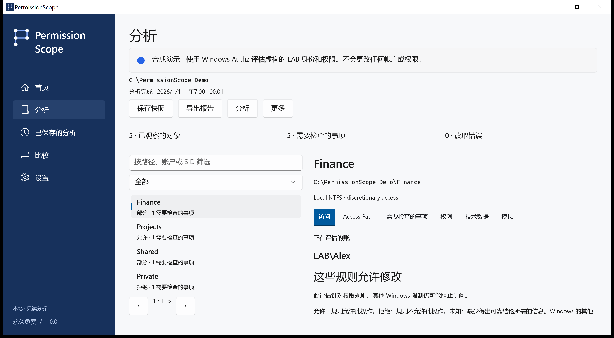

理解结果
允许表示评估的自主访问控制规则允许指定操作。部分表示允许某些操作。拒绝表示这些规则不授予访问权限。未知表示上下文不足以确认结果，绝不当作允许。
PermissionScope · Windows · Apache-2.0
保存本地快照、比较观测、在内存中模拟移除规则，并导出 HTML、CSV、JSON、XLSX 或 PDF。后续观测中未出现的资源不会被自动判定为已删除。

允许表示评估的自主访问控制规则允许指定操作。部分表示允许某些操作。拒绝表示这些规则不授予访问权限。未知表示上下文不足以确认结果，绝不当作允许。
Windows Authz 计算权限掩码。Access Path 显示有贡献的条目和已记录的成员关系。继承标志不能证明来源祖先。自主 ACL 中的完全控制也不保证能打开文件。
保存本地快照、比较观测、在内存中模拟移除规则，并导出 HTML、CSV、JSON、XLSX 或 PDF。后续观测中未出现的资源不会被自动判定为已删除。
远程登录、S4U 上下文、条件规则和未经验证的链接目标仍为未知。完整性策略、加密、锁和特权不在本次判定范围内。无遥测、帐户或云服务。真实导出可能包含敏感路径和帐户名称。
请提供版本、Windows 版本、操作和错误码。技术选项卡可复制不含路径、帐户或 SID 的诊断信息。翻译为预览版，技术依据可能仍为英文。不声称已完成母语审核或辅助技术认证。
分析和模拟为只读操作。应用更改是单独且需明确确认的流程，仅适用于普通本地文件，并包含快照、持久日志、验证和回滚。文件夹、链接及具有多个硬链接的文件除外。
图文指南 →Windows 10 1809 或更高版本。完整包包含运行时。安装程序目前未签名，请核对 SHA-256。ARM64 在 CI 中交叉构建，尚无 ARM 实机认证。Store 和 WinGet 可用性请查看版本状态。